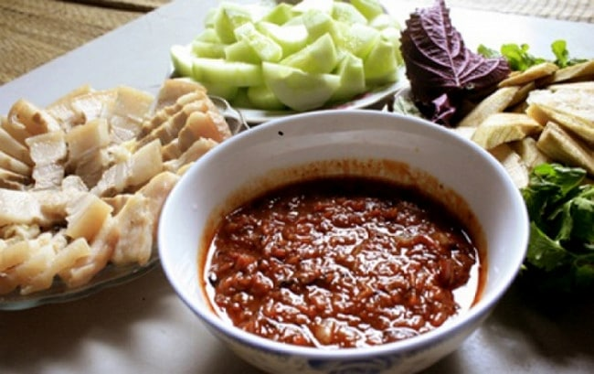
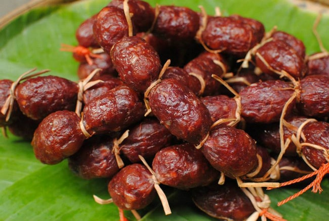
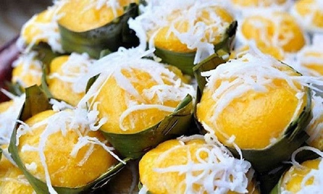
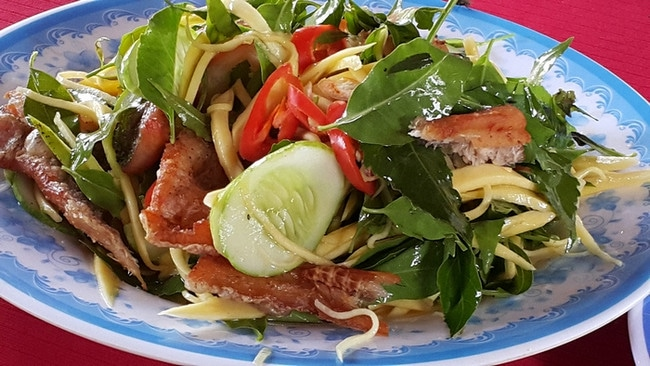
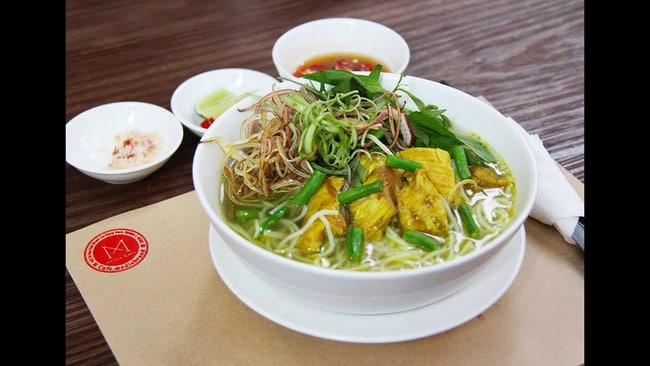
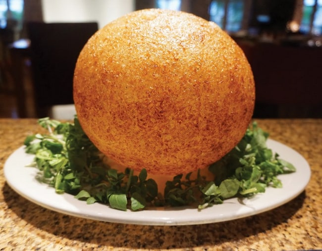
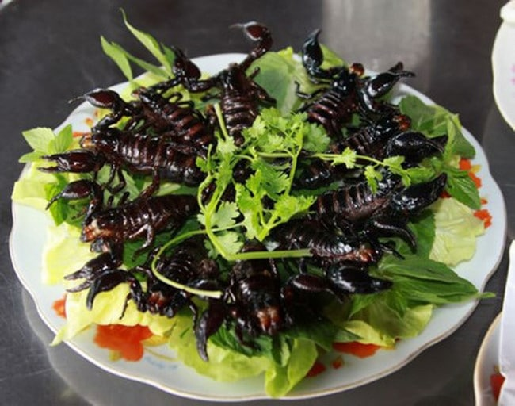
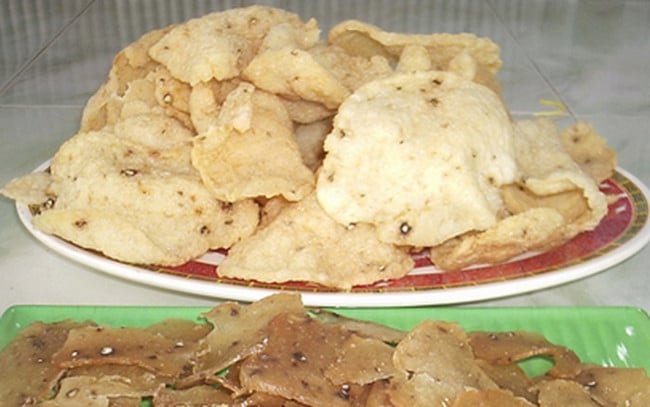
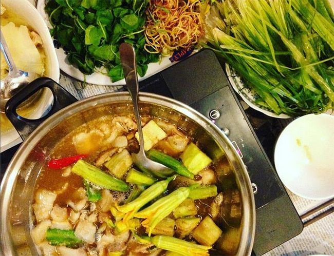
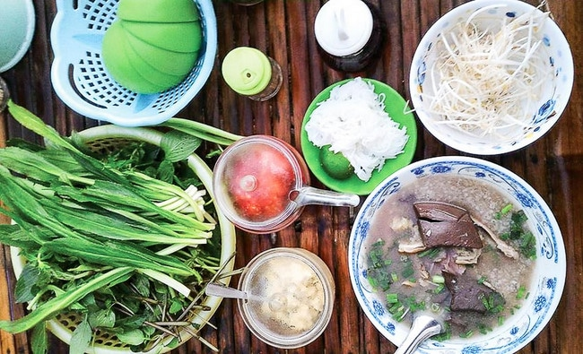

Là vùng đất có nhiều đồng bào dân tộc cư trú như: Chăm, Khmer, Hoa, Việt…nên văn hóa ẩm thực An Giang rất đa dạng phong phú mỗi món ăn đều mang hương vị bản sắc riêng. Du lịch An Giang, bạn không chỉ được tham quan những di tích văn hóa lịch sử hào hùng, cảnh đẹp của thiên nhiên núi rừng hoang sơ và hùng vĩ, mà còn được thưởng thức những món ăn đặc sản dân dã thơm ngon, độc đáo chỉ có riêng ở nơi đây. Sau đây Hy sẽ cùng các bạn tìm hiểu xem những món ăn đặc sản An Giang nào được nhiều du khách yêu thích nhé.
Mắm ruột
Món đặc sản đầu tiên Hy muốn giới thiệu đến bạn đọc là món mắm ruột. Món ăn được làm từ ruột cá ngon trộn đều cùng với thính gạo lứt và để trong khoảng 3 tháng để món này có hương vị đậm đà nhất. Nếu như thưởng thức mắm sống, bạn hãy ăn kèm với rau sống và ớt sừng trâu giúp cho món ăn trở nên dậy mùi hơn. Bên cạnh đó, mắm ruột còn được làm nguyên liệu để chưng thịt ba rọi, trứng vịt, v.v… tạo nên một món ăn hấp dẫn, lạ miệng.
Tung lò mò
Tung lò mò Châu Phong hay còn có tên g khác là lạp xưởng bò – loại lạp xưởng đặc biệt được chế biến từ thịt bò ngon, món đặc sản này của người Chăm theo đạo Hồi tại tỉnh An Giang. Tung lò mò có vị chua, một chút dai dai. Khi ăn bạn sẽ cảm nhận được vị thơm của thịt bò và vị béo ngậy từ mỡ bò hòa quyện vào nhau khiến cho người ăn khi thưởng thức xong còn thòm thèm. Món ăn này sẽ ngon nhất khi bạn nướng chúng trên bếp than và ăn kèm cùng rau răm, tương ớt.
Bánh bò thốt nốt Châu Đốc
Cây thốt nốt vốn là loại cây đặc trưng cho vùng đất Châu Đốc, vì vậy rất dễ hiểu vì sao nơi đây lại có món bánh bò thốt nốt. Món ăn này là sự kết hợp của vị xốp từ bánh, vị ngọt của đường thốt nốt và vị béo thơm của nước dừa, mọi thứ hòa quyện vào nhau tạo nên một món ăn rất vừa miệng. Giá bán bánh bò thốt nốt khá rẻ, chỉ 5000 vnđ/chiếc bánh nhỏ hoặc 10.000 – 20.000 vnđ/chiếc bánh có kích thước to hơn.
Gỏi sầu đâu
Top 10 đặc sản ẩm thực An Giang ngon cho du khách không thể không kể đến món gỏi sầu đâu. Sầu đâu được biết đến là loại rau ăn có vị đắng tại vùng đất này. Lá sầu đâu được chế biến thành nhiều món khác nhau, tuy nhiên gỏi sầu đâu vẫn là món đặc sản người dân nơi đây dành tặng cho du khách. Gỏi sầu đâu gồm có lá sâu đầu, tôm, thịt hoặc cá, các loại gia vị đầy đủ, ớt cay, dưa leo và nước me chua đậm đà để tạo nên tổng thể món ăn có đủ đắng, cay, mặn, ngọt. Món ăn tuy đơn giản và dân dã của người dân nơi đây nhưng cũng sẽ là trải nghiệm thú vị dành cho du khách.
Bún cá Long Xuyên
Nếu đã đặt chấn đến An Giang thì đừng bỏ qua món đặc sản bún cá Long Xuyên vô cùng hấp dẫn này nhé. Loại cá được lựa chọn cho món ăn này là cá lóc được phi lê thịt và ninh xương cá tạo nên vị ngọt đậm đà cho món ăn. Bún cá sẽ được bày trí cùng với rau nhút, rau muống bào và bắp chuối thái. Bạn sẽ hoàn toàn bị chinh phục bởi vị chua thanh của nước dùng cùng với vị ngọt của cá lóc phi lê.
Xôi phồng Chợ Mới
Sẽ thật thiếu sót nếu như Hy không kể đến món vô cùng đặc biệt khi bạn được thưởng thức xôi hình quả bóng. Long Xuyên có món bún cá nóc thì Chợ Mới nổi tiếng với món xôi phồng. Gạo nếp Chợ Mới nổi tiếng có chất lượng thơm ngon nhất vùng, hạt to tròn và dẻo thơm. Món ăn này được nấu dựa trên sự kết hợp của gạo nếp và đậu phộng tạo nên màu vàng thơm, chắc chắn bạn sẽ ghiền món ăn này chỉ sau lần đầu thử. Khi ăn bạn hãy nhớ chấm xôi cùng với tương ớt hoặc xì dầu để món ăn được tròn vị.
Bọ cạp Bảy Núi
Về với vùng đất Bảy Núi, An Giang bạn sẽ được trực tiếp thưởng thức món bọ cạp chiên giòn. Người dân nơi đây đặc biệt với tài nghệ săn bọ cạp trên núi Bảy Núi, số bọ cạp sau mỗi lần thu hoạch sẽ được thả vào thau nước cho sạch bụng, sau 1 – 2 ngày thì bọ cạp nguyên con được người dân chế biến bằng cách cho vào chảo dầu đang sôi. Mùi vị món ăn này khá lạ và cuốn hút, thông thường người thưởng thức sẽ ăn kèm với rau thơm, vài cọng ngò, dưa leo và cà chua chấm với nước tiêu chanh. Đây có lẽ sẽ là trải nghiệm khó quên nhất của du khách khi thưởng thức món ăn này.
Bánh phồng cá linh
Cá linh là món đặc sản chỉ có ở An Giang, loại cá này đặc biệt chỉ xuất hiện vào mùa nước lũ từ tháng 8 đến tháng 11 mà thôi. Do đó, nếu du khách đến tham quan An Giang vào thời điểm này thì đừng quên thưởng thức món ăn này nhé. Cá linh sau khi được thu hoạch về sẽ được người dân nơi đây lựa chọn ra những con còn non và tươi. Sau đó vứt phần đầu, moi ruột và rửa sạch, để ráo nước, cuối cùng băm nhuyễn cá linh. Công đoạn tiếp theo, người chế biến sẽ trộn cá linh cùng với lòng trắng trứng, bột mì theo tỷ lệ nhất định. Cá linh sẽ được hấp cách thủy trong lớp nylon rồi đem đi phơi khoảng 4 nắng là được.
Lẩu mắm Châu Đốc
Lẩu mắm tạo nên nét đặc trưng và thu hút nhất tại Châu Đốc, du khách đến đây không thể bỏ lỡ cơ hội được thưởng thức món ăn này. Mắm cá sặc và mắm cá chốt sẽ là hai loại mắm được sử dụng để tạo nên nước dùng cho món ăn. Sau khi ninh kỹ mắm xong, người chế biến sẽ bỏ xác mắm và lấy phần nước, cho thêm ít sả để khử mùi nồng của mắm. Khi nước lẩu sôi, người thưởng thức sẽ cho cá basa, cá kèo, cá lóc cùng các loại rau như bông điên điển, bông so đũa, bông súng ăn kèm với bún. Món ăn này hợp khẩu vị với mọi người, ngay cả những du khách đến từ miền Bắc và chưa từng được thưởng thức bao giờ.
Cháo bò Tri Tôn
Về với Tri Tôn hoặc Tịnh Biên, tỉnh An Giang, bạn sẽ không thể bỏ lỡ cơ hội thưởng thức món cháo bò thơm ngon. Đây là hai khu vực có lượng bò nuôi nhiều nhất An Giang, do đó bạn có thể hoàn toàn yên tâm về chất lượng thịt bò tự nhiên tại đây. Món cháo bò không thể thiếu bộ lòng bò được luộc chín riêng rẽ trên bếp lửa hồng. Thưởng thức bát cháo lòng nóng hổi cùng gan, lá lách và tiết bò sẽ khiến cho món ăn trở nên hoàn hảo hơn. Một bát cháo bò có giá khá hợp lý, chỉ với 30.000 – 40.000 vnđ/bát là bạn đã no nê bụng rồi.
Vậy là Hy đã giới thiệu xong cho các bạn về Top 10 món ăn đặc sản ngon được nhiều thực khách yêu thích nhất ở vùng đất An Giang rồi đó. Nếu có dịp được đặt chân đến vùng đất xinh đẹp này, hãy tự mình ghé thăm và trải nghiệm nhé!